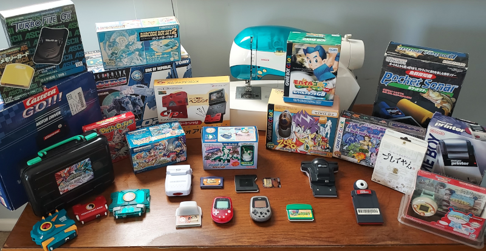
Current State of Affairs
Every April 1st, I release a new version of GBE+. It's really nothing special, just whatever code happens to be the latest, although I do try to make sure things are stable enough. Anyway, I stopped doing "Progress Reports" a long time ago. They just felt too annoying and time-consuming to write, especially when any important changes or additions could be summarized in a short list rather than a lengthy article. So, this year, I'm trying something different. Rather than focus on what's happened with GBE+ over the past year, I want to talk about what's happened with multiple Game Boy emulators over the past few years. I want to discuss the overall state of Game Boy, specifically when it comes peripherals, accessories, add-ons, and other special features.
A number of people these days assume that Game Boy emulation has been more or less stagnant for nearly a generation. For your average user that simply wants to play Pokemon, Mario, and Zelda games, nothing much has changed over 20+ years. Practically any emulator out there will adequately handle most games, and it's been that way for decades. Every so often, rare corner cases like Pinball Deluxe or Hello Kitty Collection: Miracle Fashion Maker are finally emulated properly due to increases in accuracy, but for everything else, 2024 doesn't feel all that different from 2004. Recently, however, a bunch of activity has been going on in the background, particularly in regards to esoteric hardware utilized by some Game Boy software. Admittedly, most of this work has been for games that few have heard of, let alone played. So, why should anyone care about extra hardware that only a handful of relatively unknown titles used?
The Game Boy platform was more than just the handheld itself; it relied on cartridges for games as well as a host of secondary products such as the Link Cable and Game Boy Printer. Emulating the console itself only preserves one portion of its history. Without recreating all of the hardware that formed its ecosystem, we risk losing many important experiences. Imagine a world, for example, where no emulator supported the Link Cable. There would be no head-to-head Tetris matches, no trading Pokemon, and no friendship-ending Mario Kart races. It is therefore crucial that we pay attention to the world of the Game Boy's accessories, especially if we are concerned about preserving everything the system had to offer. If the goal is one day get both complete and accurate Game Boy emulation, we can leave no stone unturned. Emulating these devices provides a richer, fuller understanding of what the Game Boy was and what it achieved. Even the strangest peripherals provide valuable insights on the past, and occassionally some of them are really fun to play around with.
For over 18 years, Game Boys continually received new, additional hardware that changed how the handheld and its software interacted. There are literally dozens of products that fall into this category, and that's just the officially licensed stuff. This has presented a unique challenge for Game Boy emulation, as each piece needed to be researched and implemented. Historically, few emulators tackled all but the most popular items, leaving the rest to obscurity. However, in recent years, the situation has completely changed. Whereas before only a short list of accessories were emulated, today the vast majority are in some playable or useable state. For the purposes of this article, I will be exclusively talking about officially licensed hardware (sorry GameShark), and hardware that altered how the software/code actually operated (sorry Booster Boy), and hardware that was actually released (sorry WorkBoy).
The above limitations represent the most relevant and pressing items in need of preservation. They were commercially sold to the public and given Nintendo's approval, in a sense becoming part of the Game Boy's identity. The lists below indicate the current status of emulating each and every one of these. For reference, here are what each of the colors mean:
Green = Full Emulation.
Yellow = Partial Emulation or Work in Progress.
Red = No Emulation.
Note that Partial Emulation is often very playable and nearly fully functional, just that some last missing bits keep it from perfection (or at least completeness). The lists also include a few emulators that are known to emulate these products. That section is not meant to be exhaustive; rather it merely provides a glimpse at how widely supported these features may be.
Game Boy and Game Boy Color
Barcode Boy
Emulated By: GBE+, KiGB (partial)
Notes: All cards have been scanned and preserved.
Barcode Taisen Bardigun Reader
Emulated By: GBE+
Notes:
DMG-07 (4-Player Adapter)
Emulated By: DoubleCherryGB, GBE+
Notes: DoubleCherryGB has higher compatibility.
Full Changer
Emulated By: GBE+
Notes:
Game Boy Camera
Emulated By: BGB, GBCC, GBE+, GiiBiiAdvance, mGBA, SameBoy, and others
Notes: Some support webcam input or static images
Game Boy Printer
Emulated By: GBCC, GBE+, mGBA, SameBoy, VBA-M, and others
Notes:
GBKISS LINK
Emulated By: NONE
Notes: No support or documentation yet
GB Memory Cartridge
Emulated By: GBE+
Notes:
GBC Infrared Port
Emulated By: GBE+, SameBoy
Notes: Mostly works, but some games/devices need better support
HuC-1 (Infrared)
Emulated By: SameBoy
Notes: IR emulated but unknown compatibility?, no GBKISS LINK support
HuC-3 (Infrared + RTC + Alarm)
Emulated By: SameBoy
Notes: IR emulated but unknown compatibility?, no GBKISS LINK support, RTC + alarm ARE emulated
Jaguar JN-100
Emulated By: GBE+
Notes:
Jaguar JN-2000
Emulated By: GBE+
Notes:
Link Cable
Emulated By: BGB, GBE+, KiGB, mGBA, SameBoy, TGB-Dual, VBA-M, and others
Notes:
MBC3 (Real Time Clock)
Emulated By: BGB, GBCC, GBE+, KiGB, mGBA, SameBoy, VBA-M, and others
Notes:
MBC5 (Rumble Cartridge)
Emulated By: GBCC, GBE+, mGBA, SameBoy, VBA-M, and others
Notes:
MBC6 (Flash Memory)
Emulated By: GBE+, KiGB (partially), mGBA
Notes: Proper support typically depends on emulating the Mobile Adapter GB as well
MBC7 (Accelerometer)
Emulated By: BGB, GBCC, GBE+, mGBA, SameBoy, VBA-M, and others
Notes: Some use gyro controls, other map buttons/keys
Mobile Adapter GB
Emulated By: BGB (with Python scripts), GBE+
Notes: Some game servers not yet emulated
Pocket Sonar
Emulated By: GBE+
Notes: Uses static image as sonar input
Power Antenna/Bug Sensor
Emulated By: GBE+
Notes: Flashes on-screen icon to indicate device lighting up
Singer IZEK 1500
Emulated By: GBE+
Notes:
TAMA5 (RTC + Alarm)
Emulated By: mGBA, GBE+, VBA-M
Notes: Alarm function not emulated
Turbo File GB
Emulated By: GBE+
Notes:
As the list demonstrates, most of the Game Boy's exotic hardware is currently emulated in some capacity. The vast majority is fully preserved with only a few sticking points here and there. With regard to the yellow category, many of these games are fully playable and their hardware is sufficiently implemented in various emulators, however, there is room for improvement.
For the Game Boy Color's IR port, many games will just work given the proper settings. Unfortunately, some games are particularly tricky to handle. Take for example, Pokemon Trading Card Game (non-Japanese versions) and its Card Pop functionality. It requires both participants to press the A Button at roughly the same time, something that can be difficult for a single person to recreate by themselves in an emulator. Other games, such as Bomberman Max and Pokemon Pinball, operate similarly. Another challenge with GBC IR communications involves emulating external devices. These range from handheld virtual pets like the Pokemon Pikachu 2 or Pocket Sakura, to T.V. remotes, lamps, and even Furby dolls. Thankfully, both the Pokemon Pikachu 2 and Pocket Sakura IR protocols have been documented, so emulating their communication directly is a possibility. Some games that require IR bursts (such as Chee Chai Alien or Bomberman Max) can simulate random IR transmisisions. At least one game - Doraemon Memories - requires emulating a T.V. remote with the NEC protocol. Even with all these caveats, the GBC IR port is decently supported, especially for popular features like Pokemon G/S/C's Mystery Gift.
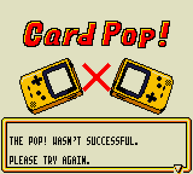
The HuC-1 and HuC-3 mappers themselves are widely supported in various Game Boy emulators to get the game's ROM and backup RAM working. However, both of these cartridges used IR diodes for wireless data transmission, and the HuC-3 had a built-in real-time clock with a programmable alarm. SameBoy has led the way here, implementing all of that. The last piece of the puzzle lies with the GBKISS LINK, a late-90s modem that used IR to transmit data between PCs and various HuC cartridges. Given that the GBKISS LINK is extremely rare and has yet to be documented or reverse-engineered at all, HuC-1/HuC-3 emulation remains somewhat incomplete. Just about everything related to the GBKISS LINK is in dire need of preservation, from the Windows 95 software and drivers to the actual content games transferred via the modem. Hudson would actually release files online that players could download and transfer from their PC to their Game Boys. Only a few examples have been recovered to date. Realistically however, for most users and their needs, these cartridges are basically as good as covered.
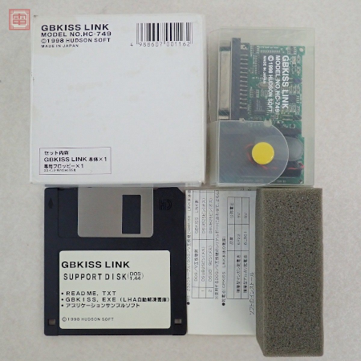
The Mobile Adapter GB itself is properly emulated in either GBE+ or BGB (using Python scripts). The main difficulty lies with emulating the actual servers that compatible games relied on. It's been over 20 years since those servers were last up and running, so each games has be individually reverse-engineered to figure out what how the online portion should have worked. As one might imagine, this is a slow process. A total of 22 games for the GBC and GBA supported the Mobile Adapter GB, each with unique servers that need to be recreated indiviudally. Thankfully, the Reverse Engineering Open Network (REON) team has been working on this very task for years. Test servers for software like Game Boy Wars 3, Mario Kart Advance, Pokemon Crystal, and Mobile Trainer are currently under development. This area is definitely a long work-in-progress. Even so, a great deal of online content has been resurrected at this time.
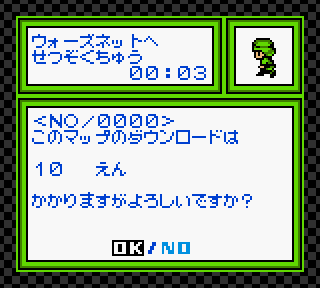 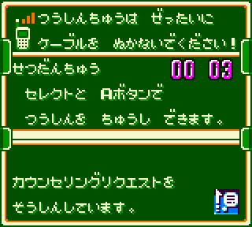 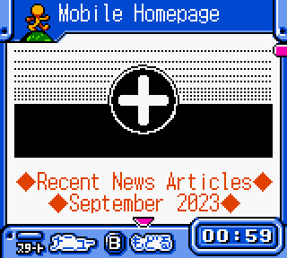
Lastly, the TAMA5 was a cartridge that sported a real-time clock and a programmable alarm. Like the HuC-3, a number of emulators support the mapper to handle ROM data, backup memory, and the real-time clock. However, to my knowledge, none yet support the alarm. Although the game is perfectly playable without the alarm, that feature serves an important role by alerting the player at set intervals. Overall, however, this isn't a difficult task to complete. The emulator just needs some way of sleeping or waiting in the background until the right time. This could be achieved through scheduling events with a given OS (a cron job perhaps, or even a dedicated daemon for the emulator). Coming up with a cross-platform solution that doesn't involve gluing together a bunch of shell scripts may prove a bit hard but still doable.
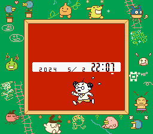
Today, players can largely experience everything the Game Boy and Game Boy Color officially offered. Almost everything is emulated to some degree, with but a few areas left to work on. Only the elusive GBKISS LINK stands as the last true holdout. Overall, the situation has vastly improved over the past 10 years. Circa 2014, at least 14 of these items would have been sitting in the red!
Game Boy Advance
Advance Movie Adapter
Emulated By: GBE+
Notes:
Agatsuma TV Tuner
Emulated By: GBE+
Notes: WIP support, research is ongoing
Battle Chip Gate
Emulated By: GBE+, mGBA
Notes:
Campho Advance
Emulated By: GBE+
Notes: Basic telephony and video transmission emulated, audio transmission missing
Drill Dozer Rumble
Emulated By: GBE+, mGBA, Pizza Boy
Notes: Hardware and commands emulated, needs audio/video output
e-Reader
Emulated By: no$gba, mGBA, VBA-M
Notes:
GBA Infrared Adapter (AGB-006)
Emulated By: GBE+
Notes:
GBA Music Recorder
Emulated By: GBE+
Notes:
GBA Real-Time Clock Cartridge
Emulated By: GBE+, mGBA, no$gba, NanoBoyAdvance, SkyEmu, VBA-M, and others
Notes:
GBA Tilt Cartridge
Emulated By: GBE+, mGBA, My Boy!, VBA-M
Notes: Some use gyro controls, other map buttons/keys
GlucoBoy
Emulated By: GBE+
Notes:
Joy Carry Cartridge
Emulated By: GBE+
Notes:
Link Cable
Emulated By: BizHawk, mGBA, no$gba, VBA-M
Notes: Some support Single Pak and Multi Pak modes
Magical Watch
Emulated By: GBE+
Notes:
Multi Plust On System
Emulated By: GBE+
Notes:
Nintendo MP3 Player
Emulated By: GBE+
Notes: Hardware and commands emulated, needs audio output
Play-Yan and Play-Yan Micro
Emulated By: GBE+
Notes: Hardware and commands emulated, needs audio/video output
Solar Sensor
Emulated By: GBE+, mGBA, no$gba, NanoBoyAdvance, SkyEmu, VBA-M, and others
Notes:
Soul Doll Adapter
Emulated By: GBE+
Notes:
Turbo File Advance
Emulated By: GBE+
Notes:
Virtureal Racing System
Emulated By: GBE+
Notes:
WarioWare Twisted! Gyroscope + Rumble
Emulated By: GBE+, mGBA, Pizza Boy, VBA-M
Notes: Some use gyro controls, other map buttons/keys
Wireless Adapter
Emulated By: GBE+ (partial), gpSP, PizzaBoy, VBA-M (partial),
Notes:
The Game Boy Advance is also on very solid ground in terms of preserving many of its peripherals. Much of the system's additional hardware is handled quite readily. Technically, every single one can be emulated today in some form. However, a few areas remain that prevent users from fully recreating the original experience of these products.
Emulation of the Campho Advance is very, very close to being feature-complete. Currently GBE+ has a framework for connecting two instances of the emulator over a network and establishing virtual calls. One user can ring up another to start a call, and either side can end it remotely. Video can be transmitted, however, currently it only takes the form of a static image. What's missing here is tapping into an active audio-video stream (such as a webcam), but there are plans to address that soon. Much of the work involved dumping the cartridge and reverse-engineering the hardware, so once audio-video transmission is up and running, the Campho Advance will be fully taken care of.
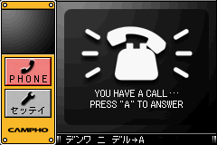 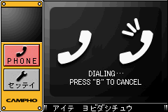
In that same regard, the Play-Yan models and the Nintendo MP3 Player are very nearly feature-complete. The bulk of emulation revolves around dealing with the cartridge's unique hardware and its various commands for file management and playing media files. With all of the research mostly finished, the only thing left to do is output audio samples and video frames. GBE+ needs to convert user media files into data it easily read and output through the emulator, Once that's setup, these cartridges will qualify as fully emulated.
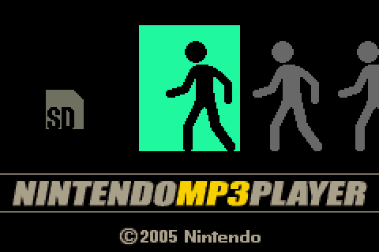 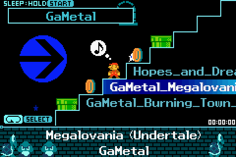
The last item that needs to be looked at is the Agatsuma TV Tuner. It was the first and only TV tuner officially licensed by Nintendo for the GBA. Despite being advertised as a Nintendo DS product, it is functionally a giant GBA cartridge. As much as I talked about the Play-Yan, GlucoBoy, and Campho Advance being the last holdouts for the GBA (the Triforce of Terror as I called them), this one kinda blindsided me. I only discovered it some time last year. At any rate, the Agatsuma TV Tuner has recently moved from the red category to yellow, as I have begun reverse-engineering the hardware. At this time, it's difficult to say what's needed for feature-complete emulation, but as I see it, that would involve converting several video streams (local files or live feeds from the internet) into "TV channels" that GBE+ can access and present. I'm confident it won't be all that difficult, especially once audio/video conversions are properly handled with the Play-Yan. Currently GBE+ can only get the cartridge to boot and display static noise on every channel, so there's lots of work to be done.
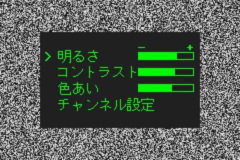
With the exception of some of the most complicated and exotic cartridges, many gamers can play almost anything the GBA has to offer. In the past, the GBA was particularly troubled by gaps in emulation. 10 years ago, for example, at least 15 of the above items would have been in the red category! Thankfully, we've recovered a lot of history that would have otherwise been ignored or lost.
2025 and Beyond
Honestly, I really feel like all of the remaining yellow categories for the GBA will be dealt with very soon. Most of it is just handling audio/video streams for cartridges that deal with multimedia. The extensive groundwork for the Play-Yan and the Campho Advance is already complete, so it's just a matter of getting that last bit of code done. After that, I don't suspect the Agatsuma TV Tuner will be far behind.
Getting everything for the Game Boy and Game Boy Color into the green category is going to be a long-term effort, thanks to the Mobile Adapter GB. However, if we can get the GB KISS LINK emulated, we'd elminate the red category completely. At that point, at least every single officially licensed piece of hardware for any Game Boy console would have some basic emulation. That's the goal I'd like to hit this year.
While there have been many positive developments for the Game Boy emulation scene in terms of peripherals, accessories, add-ons, other systems are not so fortunate. Although this article was exclusively about the Game Boy, I think it's important to draw attention to the fact that more work needs to be done elsewhere. Consoles like the NES, SNES, Genesis/Mega Drive, N64, and PS1 all had their fair share of wild and crazy hardware that to this day remains unemulated. I'd like to see the success we've had with the Game Boy replicated across more systems. I'm serious when I say it keeps me up at night that no one knows how the Tsuricon 64 actually works, or that we haven't studied and recreated the Lasabirdie's motion controls. If you look at all the extra hardware for game consoles that just isn't emulated (or even researched/documented at all!), you'll see that we have some pretty serious gaps in video game preservation. While a single fishing rod and laser-based golf putter are small by themselves, it adds up when multiplied by dozens of examples across multiple consoles. If I'd made this article specifically about the PS1, for example, there would have been a lot red entries...
Even so, I'm hopeful that the Game Boy would serve as a model to follow for every home console and handheld out there. We're so close to having complete emulation of all things Game Boy (officially licensed, at least) that it's actually kinda crazy. There's a mountain of work that needs to be done outside of that, however. With any luck, we'll get there soon enough. I personally won't rest until we've conquered everything there was to play and see. Saving video game history depends on all of us making whatever efforts we can. We'll see what the next State of Emulation looks like down the road. Until then, remember the motto: Never give up. Never surrender. Emulate everything.